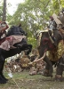

Also known as:Wake Up to Kill 3 (original title)
Country:Thailand, 83 minutes
Spoken languages:Thai
Genres:Action, Adventure, Comedy, Horror
Director(s):Prapon Petchinn, Panna Rittikrai
Writer(s):Panna Rittikrai
Video Codec:Unknown
Number: 255


Certification:
Storyline:
Two sisters are in search of their grandfather's body so it can be buried in their family tomb. In the jungle, they run afoul of gangsters performing an evil experiment involving blood that turns them into zombies. A Sword of God ...
Cast: 

Medium: Original DVD,
Comments: Part of: Spirited Killer Trilogy
Loaned: No
Aspect ratio: Unknown